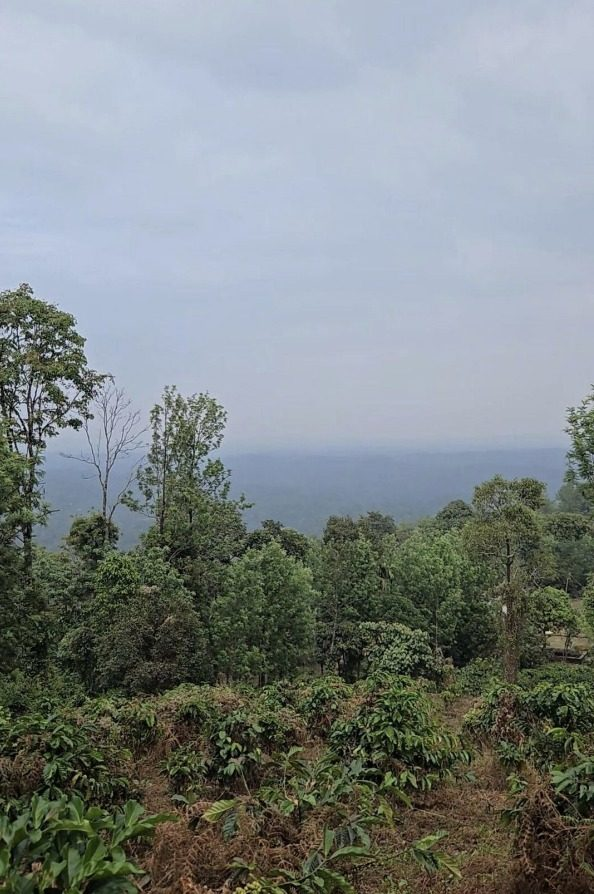

로부스타
파인 로부스타
해발 1,000m 이상에서 재배한 고품질 로부스타로, 깨끗하고 밀도 높은 원두를 커머셜 및 스페셜티 로스터에 맞춰 공급합니다.
자사 농장 원산지 · 프리미엄 품질
인도 카르나타카주 쿠르그(코다구)의 고지대에서 40년 넘게 가꿔 온 자사 농장의 파인 로부스타와 아라비카 원두. 그늘 재배, 천일 건조, 무첨가로 로스터, 카페, 대량 구매 고객께 공급합니다.
1,094m
해발 고도
40년+
이어져 온 농장의 역사
100%
토종 수목 아래 그늘 재배
6~8일
농장에서의 자연 천일 건조
농장 소개
인도 카르나타카주 서고츠산맥의 보호림 가장자리, 쿠르그 팔랑갈라에 자리한 저희 커피 농장은 40년 넘게 정성껏 가꿔져 왔습니다.
보호림과 직접 맞닿아 있어 훼손되지 않은 깨끗한 자연 생태계가 유지됩니다.
40년 넘게 관리하고 재배해 오며 토양과 그늘 수관이 자연스럽게 성숙했습니다.
농장에서 천일 건조한 100% 자연 그대로의 무첨가 원두로, 쿠르그 고지대 고유의 테루아를 그대로 담았습니다.


테루아
1,094m
고도
쿠르그 팔랑갈라의 해발 1,094m에 자리해, 밀도 높고 천천히 익는 커피 체리에 필요한 서늘한 기온을 갖추고 있습니다.
100%
수관(캐노피)
토종 그늘나무 아래에서 재배해 표토의 수분과 토착 생물 다양성을 지킵니다.
높은 당도
미기후
안정적인 미기후가 자연스러운 단맛과 과실의 높은 당도(Brix)를 만들어 줍니다.
커피
그늘에서 자라 자사 농장에서 천일 건조한 쿠르그산 로부스타와 아라비카 원두. 산미가 낮고 부드러워 에스프레소 블렌드와 블랙커피에 잘 어울립니다.
로부스타
해발 1,000m 이상에서 재배한 고품질 로부스타로, 깨끗하고 밀도 높은 원두를 커머셜 및 스페셜티 로스터에 맞춰 공급합니다.
가공
향료, 인공 첨가물, 화학 가공 보조제를 전혀 사용하지 않고 햇볕에 자연 건조해 농장 본연의 순수한 맛을 전합니다.
컵
부드럽고 균형 잡힌 컵 프로파일로 에스프레소 블렌드와 전통적인 블랙커피에 적합합니다.
아라비카
농장의 60%에 아라비카를 재배하고 있으며, 파인 로부스타와 함께 해발 1,094m에서 그늘 재배합니다.

순수한 무첨가 농장 커피. 향료나 화학 가공 보조제를 전혀 사용하지 않습니다.

지속가능성
01
NPK 비료와 유기 퇴비를 엄격한 기준 내에서 균형 있게 사용해 식물의 건강과 기후 변화에 강한 토양을 만듭니다.
02
현재 계절성 몬순 강우를 활용하고 있으며, 올해 전용 빗물 저류 시설을 건설 중입니다.
03
여러 층의 자연 수관이 농장 전체의 표토 수분과 토착 생물 다양성을 지킵니다.

공급
쿠르그산 원두를 농장에서 직접 주문하세요. 샘플 수량부터 로스터, 카페, 수출 바이어를 위한 대량 로트까지 대응합니다.
자사 농장에서 직접 공급하는 싱글 오리진 아라비카와 로부스타.
요청 시 지역 내 엄선된 파트너 농장을 통해 추가 물량이나 유기농 마이크로 로트를 소싱할 수 있습니다.
투명한 운영과 확실한 품질로 안전 기준, 규정 준수, 맞춤 사양을 충족합니다.

자주 묻는 질문
쿠르그산 로부스타와 아라비카 원두를 찾는 로스터, 카페, 바이어분들이 자주 묻는 질문에 답해 드립니다.
카르나타카주의 쿠르그(코다구)는 서고츠산맥의 토종 숲 그늘 아래에서 커피가 자라는, 인도에서 가장 잘 알려진 커피 산지 중 하나입니다. 저희 농장은 쿠르그 팔랑갈라의 해발 1,094m에 있으며 보호림과 맞닿아 있어, 밀도 높고 천천히 익은 커피 체리를 생산합니다.
둘 다 재배합니다. 농장의 60%에 아라비카를 심었고, 해발 1,000m 이상에서 고품질 파인 로부스타도 재배합니다. 깨끗하고 밀도 높은 원두로 커머셜 및 스페셜티 로스터에게 적합합니다.
100% 자연 방식으로 농장에서 6~8일간 천일 건조하며, 향료, 인공 첨가물, 화학 가공 보조제는 전혀 사용하지 않습니다.
이 페이지의 문의 양식, 이메일(coffeeichiban@gmail.com) 또는 전화(+91 98840 61496)로 연락해 주세요. 수량, 선호 로스팅, 일정을 알려 주시면 샘플, 사양, 가격을 안내해 드립니다.
네. 자사 농장의 싱글 오리진 아라비카·로부스타 로트와 함께, 요청 시 쿠르그 지역의 엄선된 파트너 농장을 통해 추가 물량이나 유기농 마이크로 로트를 소싱해 드립니다.
네. 커머셜 및 스페셜티 로스터, 카페, 대량 구매 고객과 거래하고 있으며, 투명한 운영과 확실한 품질로 안전 기준, 규정 준수, 맞춤 사양을 충족합니다.
문의
운영사: Ichiban Foods LLP
신뢰와 투명성을 바탕으로 파트너십을 쌓아 갑니다. 원하시는 내용을 알려 주시면 샘플, 사양, 가격을 안내해 드립니다.